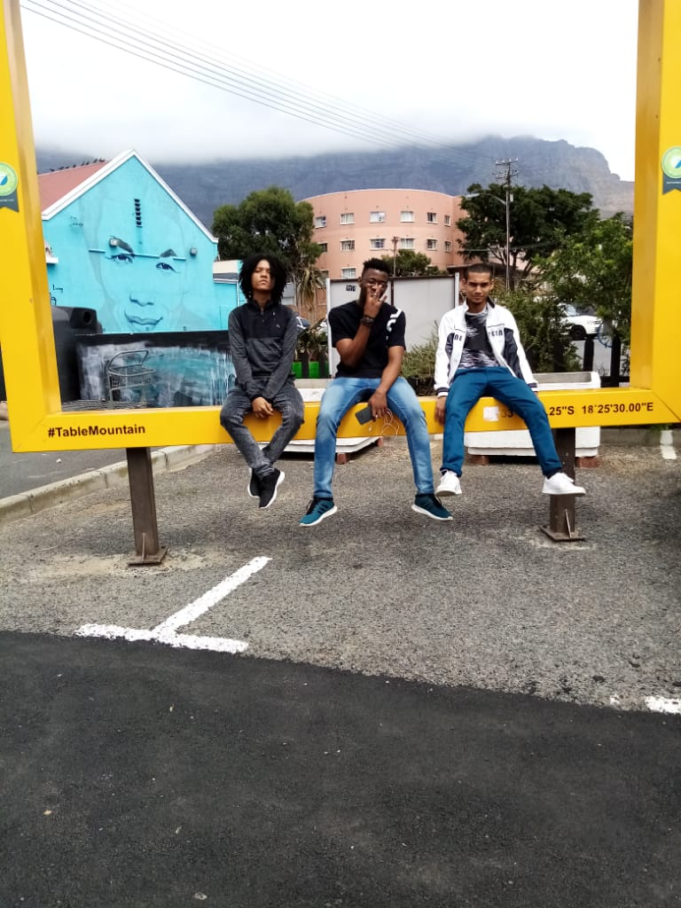
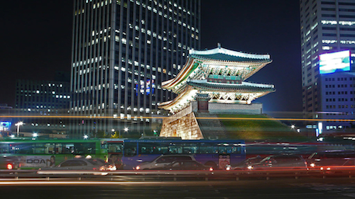
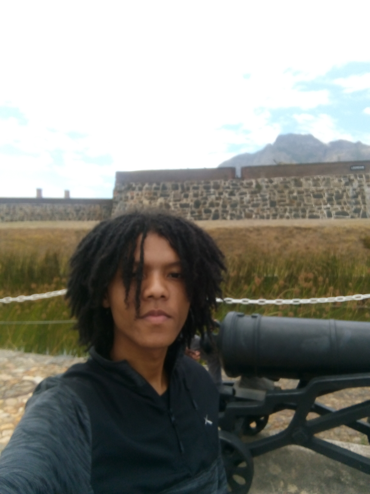
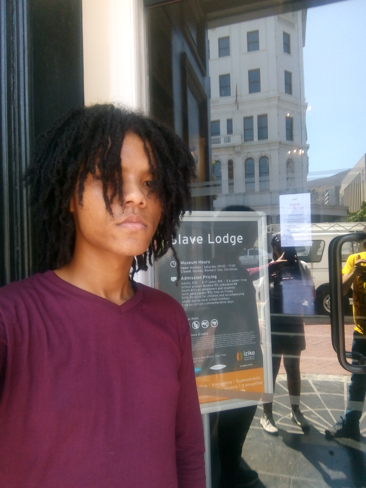

Jody Fortuin

Which City?
I would love to visit Seoul, as it's known for nightlife and alchohol.

Which foreign language?
I would love to learn Korean as it is an isolate language.
| Korean |
English |
| 안녕하세요 Annyeonghaseyho |
Hello |
| 치킨 버거 Chikin beogeo |
Chicken burger |
| 너 배고프 니 Neo baegopeu ni |
Are you hungry |
3 Historic places in Cape Town
City Hall

- The City Hall is built from honey-coloured oolitic limestone.
- The Castle was built in the year 1900.
- There is a life sized statue of Nelson Mandela where he gave his first speech.
Castle Of Good Hope

- The Castle is the oldest existing colonial building in South Africa.
- It's position marks the location of the shoreline at the time it was built.
- The Castle has dungeons and torture chambers.
Slave Lodge

- The slave lodges full name is the Iziko Slave Lodge Museum.
- The lodge has a school that previously taught Christainity and Dutch.
- The building was converted into government offices after slavery was abolishec in the 1800s.